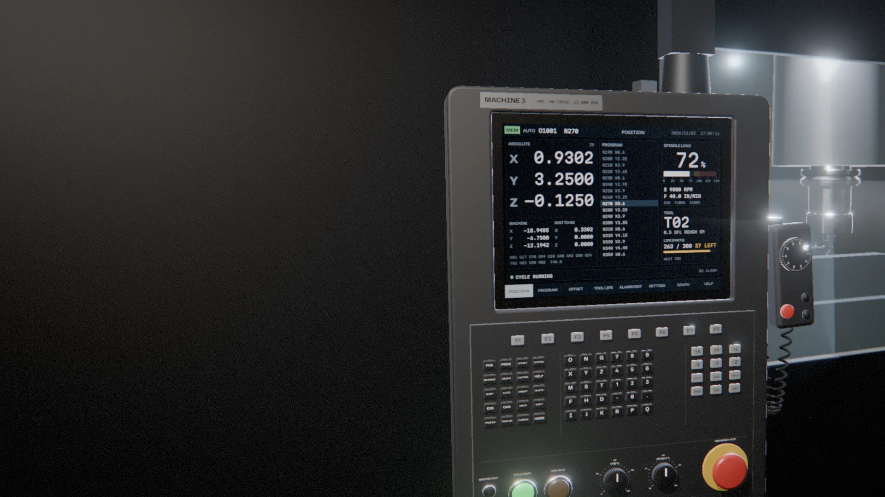
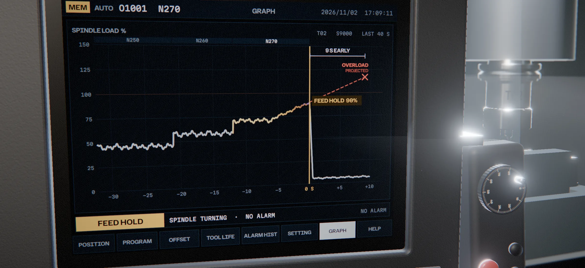

A stopped machine shouldn’t wait for morning.
Marcel is an air-gapped AI operator for American CNC shops. It reads the control’s own screen, holds the feed before a tool breaks, works from that machine’s manuals, and texts whoever is on call. The control never goes on a network. It works in simulation today; a first real machine is next.
It reads the screen your operator reads.
Marcel watches the control’s own display through a copy of its video signal. Nothing is installed on the control, and nothing is bolted to the spindle. Here, spindle load on T02 starts climbing, about 3% a second.
N270 · T02 1/2" 3-flute rougher · S9000 · F40.0 IPM · load 72% and rising
At 90%, it holds the feed.
About 9 seconds before the spindle would have overloaded. The spindle keeps turning and nothing alarms; at worst the part carries a small mark where the tool paused. Stopping is the safe direction, so Marcel doesn’t wait for anyone.
Feed hold key sent · F0.0 · S9000 · load falls to 6% · no alarm
Then it pages through the control, the way a technician would.
Alarm history: the last spindle overload was on October 29. Tool life: T02’s counter still says 37 parts left. It’s the third stop at N270 today.
SP9029 SSPA:29 OVERLOAD 2026/10/29 · T02 263/300 used
Then it narrows down why.
Three likely causes. Each one is something a person can check at the machine in under a minute.
- 1T02 worn, wrong, or not seated after the swap. A worn corner rubs instead of cutting, and a tool that slips in the collet cuts deeper than the program expects. Check the corners, the marking on the shank, and how far it sticks out. In the demo history, a worn T02 was the cause both past times.
- 2Chips or low coolant. Chips left in the flutes get cut a second time, so the load climbs. Clear the chips and check the nozzle is on the cut.
- 3An offset or program problem at N270. If T02’s length offset, H02, wasn’t re-measured after the swap, the tool cuts at the wrong depth. Check H02 against the tool, then block N270.
Then it texts whoever is on call, and waits.
Nothing restarts until a person says so. Here, you’re the technician.
Marcel’s messages are copied word for word from its simulated run on November 2, 2026, the run filmed under “The recordings” below. The control was a simulator on an offline industrial PC. The control and tool on this page are 3D drawings.
- Marcel stopped the cut at 90% spindle load, about 9 s before overload. Feed held, spindle turning, no alarm, part safe.
- What happened: load rose from 72% at 3 %/s on T02, block N270. Third stop at N270 today. T02 counter still shows 37 left.
- Likely causes: 1. T02 worn, wrong or unseated after the swap (demo history: worn T02 both past times). 2. Chips or low coolant. 3. Offset or program problem at N270.
- To do:
1. Stop the spindle before touching the tool.
2. Check T02 is correct, seated, with no corner wear.
3. Check T02 length offset and coolant nozzle.
4. Reply what you found, e.g. “replaced T02”.
Sources: none.5:09 PM - Replaced t02
- Back to normal: T02 counter reset to 300. Cycle running, past N270 now at N330, spindle load 39%, feed 100%, no alarm. Note: T05 has only 6 pieces left.
Marcel won’t restart until you reply.
Your control stays off the network.
Marcel works a machine the way an operator does. It looks at the screen and uses the keyboard port. Nothing is installed on the control, and it never gets a network cable. Unplug Marcel and the machine is exactly as it was.
| Item | Part | What it does | Touches on the control |
|---|---|---|---|
| 1 | Your control | Runs your program, as it does today. No new software, no network cable, and the operator’s screen keeps its picture. | — |
| 2 | Marcel | One sealed box beside the machine. It reads a copy of the screen, works out what’s happening, and can press a short list of keys once you sign off. | A copy of the screen signal; the keyboard port, only after sign-off |
| 3 | Your phone | Gets a message when something needs a person, and your reply comes back the same way. | Nothing |
What leaves the building
The control: nothing. It never gets a network connection. “Air-gapped” means the control.
Marcel’s box, today: the messages to your phone, and what Marcel sends to a cloud AI model while it works out what happened. Diagnosis already runs on a local model.
Planned for pilots:
- The box brings its own cellular connection, so it never joins your network.
- The box starts every connection. Replies and setting changes come back over it, and nothing on the internet can connect in.
- The cloud model gets text read off the screen, like the alarm, block, load and tool numbers. Never screenshots, video, programs, drawings or offsets.
- Images from around an alarm stay on the box for 30 days, and logs for 90.
- For shops that can’t use the internet, an offline mode still holds the feed and keeps the log, and sends nothing.
Next, the whole agent moves onto the box in your shop. Then only the messages leave.
Nothing reaches the control except keystrokes, the same keys an operator would press, from a short reviewed list, and only after the shop signs off on that machine.

Measured so far.
Four numbers from the runs and tests. Each one says where it was measured.
| Characteristic | Result | Measured |
|---|---|---|
| Feed held before the spindle would have overloaded | 9s early | In the simulated run on November 2, 2026, filmed below. |
| From an alarm to a cited fix on the technician’s phone | 6–11s | End to end, in simulation. |
| Manual pages indexed, so an answer can point to a page | 2,100+ | Manuals for two controls, including the ProtoTRAK RMX pack. |
| Invented citations | 0in 16 answers | Test answers from a local model. A line without a source is removed. |
The recordings
Three recordings from November 2, 2026, with no sound. Each one says on screen what it shows, and when it’s sped up.
Working in simulation, on real hardware
The run told above, filmed at 5:09 PM. An offline industrial PC runs a simulated CNC control, and Marcel works it through a small capture-and-keyboard device.
It sees spindle load climbing, pauses the cut, checks tool life and alarm history, texts the technician, then resets the counter and confirms the machine is running.
Working in simulation, on real hardware
In watch-only mode Marcel presses nothing. This is how a real machine starts.
When the spindle overloads and the machine alarms, the technician asks what happened. Marcel explains the alarm and how to recover. Parts of this clip run at 4× speed, and the screen says so.
Working on a real machine, from a phone
A ProtoTRAK RMX mill at a university machine shop, stopped by a fault. Nothing was installed on it.
A technician sent Marcel a photo of the screen. Marcel asked for the nameplate, identified the exact machine, and replied with fix steps from the maker’s manual, with page numbers.
Where each part stands.
- Real machine
- Simulation
- Partly working
- Next
-
Working on a real machine
Reading a fault from a phone photo and answering from the maker’s manual, with page numbers. ProtoTRAK RMX, November 2, 2026.
-
Working in simulation
Reading the screen live, holding the feed, checking tool life and alarm history, texting the technician, and resetting the counter after the fix. A real capture-and-keyboard device and a simulated control.
-
Next
A read-only install on a real CNC control at a university machine shop, pending sign-off. Marcel will watch and alert. It won’t press anything.
-
Partly working: offline diagnosis
Diagnosis runs on a local model with no internet. The agent that runs the loop still calls a cloud AI model today; moving it onto the box in your shop is next.
-
Partly working: manuals
Manuals for two controls are indexed with page citations, including the ProtoTRAK RMX pack. Haas NGC and Siemens 828D are in research. Marcel is designed to work across brands and ages of controls.
When Marcel acts, and when it won’t.
Trust is earned one operation at a time, on each machine. A real machine starts at OP 10.
-
OP 10
Watch
Reads the screen, explains alarms and texts the technician. Presses nothing.
On a real mill, from a phone photo. Live screen-reading on a real control is next.
-
OP 20
Stop
If a cut is going wrong, Marcel holds the feed right away. Stopping is the safe direction, so it doesn’t wait for anyone.
Working in simulation
-
OP 30
Ask
Anything that restarts or changes the machine waits for a technician’s yes. Marcel checks the screen after every key it presses.
Working in simulation
-
OP 40
Repeat what worked
Many stops repeat: same tool, same block. A fix your shop has approved and seen work can become automatic, machine by machine. The film shows this step.
Planned
At every step, Marcel never jogs an axis, edits a program, or changes an offset or a parameter.
Where Marcel is headed.
A rendered film of the night we’re building toward, when Marcel can also repeat a fix your shop has approved. It isn’t a recording.
What a stopped night costs you.
When an alarm hits after hours, the machine usually waits for the morning shift. These are example numbers. Move them to match your shop.
$3,600
a month in spindle time, waiting for morning
$43,200 a year, over 48 stopped nights
$150 × 6 h × 4 stops
Not counted: broken tools, scrapped parts, or a crashed spindle.
Questions shops ask first.
Short answers. Ask us anything else.
Does Marcel put my machines on the internet?
No. The control never goes on a network. Marcel reads its screen through a splitter and sends keys like a plain USB keyboard.
Today, the box Marcel runs on sends the messages and calls a cloud AI model. Next, the agent moves onto the box, and only the messages leave the building.
Will it jog an axis or change my programs?
No. Marcel never jogs an axis, edits a program, or changes an offset or a parameter.
Its actions come from a short reviewed list, like holding the feed or opening a page. After a technician approves, it can reset a tool counter and press cycle start, which runs your program as written.
What if Marcel gets it wrong?
Real machines start read-only. Stopping is the only thing Marcel does on its own, because stopping is the safe direction.
Anything that restarts or changes the machine waits for a technician’s reply, and Marcel checks the screen after every key. On the real ProtoTRAK, every line of an explanation cites a manual page, or it’s removed. The simulated control has no manual, so there Marcel says it has no source, as in the run above.
Which controls does it work with?
Marcel is designed to work across brands and ages of controls. It reads the screen the operator already uses. How it presses keys depends on the control, so that is checked on each machine before Marcel presses anything.
Manuals ready today: two controls, including ProtoTRAK RMX. Haas NGC and Siemens 828D are in research.
How is this different from machine monitoring?
Monitoring tells you a machine stopped, usually over the shop network or through added sensors.
Marcel reads the control’s own screen without putting the control on a network, holds the feed before damage, explains the alarm from the manual, and texts the fix.
What happens if nobody answers?
The machine stays in feed hold, and nothing restarts until a person replies.
The plan: the person on call gets a message at once and another at 5 minutes. The next person on your list hears at 10 minutes, and the owner at 20. If you allow it at sign-off, Marcel stops the spindle with the control’s own key after 15 minutes. Otherwise the machine waits in hold.
What stops the keyboard device from typing anything else?
Marcel only sends keys from a short reviewed list, like feed hold or a page key, and checks the screen after each one. A real machine starts read-only, with no keyboard connection, until the shop signs off on that machine.
The plan is to enforce the list twice: in Marcel’s software, and in the keyboard device’s own firmware, which drops and logs any other key. Then even a compromised box couldn’t type outside the list. Keys ship switched off, the device has a physical switch, and the list can only be changed in setup, at the machine.
On some controls, feed hold and cycle start are panel buttons a keyboard can’t press. We check that before a pilot. Where it can’t, Marcel watches and texts.
If my technician can text back, isn’t that a way in?
The plan: the box brings its own cellular connection, so it never joins your network. Your Wi-Fi or Ethernet is used only if your IT prefers it.
The box starts every connection and holds it open. Replies, setting changes and updates come back over that connection, the way a phone gets its messages. Nothing on the internet can open a connection to the box: no open ports and no port forwarding.
Can you change settings from outside the shop?
The plan: only who’s on call, how long before the next person hears, quiet hours, and software updates. Every change is signed by us, logged on the box and shown to your shop. There’s no remote shell.
The allowed keys can only change at the machine, with the device’s switch set to setup and your sign-off. So no one off site, including us, can widen what Marcel can press. If deeper support is ever needed, someone at your shop turns it on at the box for a set time, and it closes by itself.
My control’s screen is built in. Where does the splitter go?
Some controls drive a built-in screen with no video cable you can reach. We check how each control’s screen can be copied before a pilot, and say plainly if it can’t.
What does a pilot look like?
The plan: one machine for 30 days. We install it in under an hour during a planned stop. A splitter goes on the screen cable, and the box sits beside the machine on its own cellular link. There’s no IT work, and nothing is installed on the control.
For the first 14 days, Marcel only watches and messages whoever is on call. It presses no keys. At day 14, you decide whether it may hold the feed. At day 30, we go through your own numbers, like stops caught and how fast someone responded. Then you keep it, or we unplug it and the machine is exactly as it was.
Pilot Marcel on one machine.
Run machines at night or short-handed? Tell us about one machine: its control, how old it is, and when it runs with nobody around. We’ll tell you plainly where Marcel stands for it.
Why I’m building Marcel
My dad has run CNC machines his whole career. At 18 I worked in a job shop and built its inventory system for more than 1,000 fixtures.
At IMTS this year I talked with about a hundred people in the industry and heard the same thing over and over. When a machine stops at night, it waits for the one person who knows how to fix it, and those people are retiring faster than new ones come in.
Why now: AI models can finally read a control’s screen and a maintenance manual the way a technician does, and small computers can run them right next to the machine.
I study the security of machines like these. That’s why Marcel uses the screen and keyboard a machine already has, and never puts a control on a network.
Shawn Casey, founder